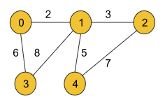
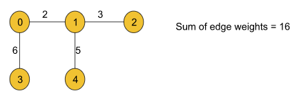

Kruskal's Algorithm - Minimum Spanning Tree : G-47
Problem Statement: Given a weighted, undirected, and connected graph of V vertices and E edges. The task is to find the sum of weights of the edges of the Minimum Spanning Tree.
Example 1:
Input Format:
V = 5, edges = { {0, 1, 2}, {0, 3, 6}, {1, 2, 3}, {1, 3, 8}, {1, 4, 5}, {4, 2, 7}}
Result: 16
Explanation: The minimum spanning tree for the given graph is drawn below:
MST = {(0, 1), (0, 3), (1, 2), (1, 4)}

In the previous article on the minimum spanning tree, we had already discussed that there are two ways to find the minimum spanning tree for a given weighted and undirected graph. Among those two algorithms, we have already discussed Prim’s algorithm.
In this article, we will be discussing another algorithm, named Kruskal’s algorithm, that is also useful in finding the minimum spanning tree.
Approach:
We will be implementing Kruskal’s algorithm using theDisjoint Set data structure that we have previously learned.
Now, we know Disjoint Set provides two methods named findUPar()(This function helps to find the ultimate parent of a particular node) and Union(This basically helps to add the edges between two nodes). To know more about these functionalities, do refer to the article on Disjoint Set.
The algorithm steps are as follows:
First, we need to extract the edge information(if not given already) from the given adjacency list in the format of (wt, u, v) where u is the current node, v is the adjacent node and wt is the weight of the edge between node u and v and we will store the tuples in an array.
Then the array must be sorted in the ascending order of the weights so that while iterating we can get the edges with the minimum weights first.
After that, we will iterate over the edge information, and for each tuple, we will apply the following operation:
First, we will take the two nodes u and v from the tuple and check if the ultimate parents of both nodes are the same or not using the findUPar() function provided by the Disjoint Set data structure.
If the ultimate parents are the same, we need not do anything to that edge as there already exists a path between the nodes and we will continue to the next tuple.
If the ultimate parents are different, we will add the weight of the edge to our final answer(i.e. mstWt variable used in the following code) and apply the union operation(i.e. either unionBySize(u, v) or unionByRank(u, v)) with the nodes u and v. The union operation is also provided by the Disjoint Set.
Finally, we will get our answer (in the mstWt variable as used in the following code) successfully.
Note: Points to remember if the graph is given as an adjacency list we must extract the edge information first. As the graph contains bidirectional edges we can get a single edge twice in our array (For example, (wt, u, v) and (wt, v, u), (5, 1, 2) and (5, 2, 1)). But we should not worry about that as the Disjoint Set data structure will automatically discard the duplicate one.
Note: This algorithm mainly contains the Disjoint Set data structure used to find the minimum spanning tree of a given graph. So, we just need to know the data structure.
Note: If you wish to see the dry run of the above approach, you can watch the video attached to this article.
Code:
#include <bits/stdc++.h>
using namespace std;
class DisjointSet {
vector<int> rank, parent, size;
public:
DisjointSet(int n) {
rank.resize(n + 1, 0);
parent.resize(n + 1);
size.resize(n + 1);
for (int i = 0; i <= n; i++) {
parent[i] = i;
size[i] = 1;
}
}
int findUPar(int node) {
if (node == parent[node])
return node;
return parent[node] = findUPar(parent[node]);
}
void unionByRank(int u, int v) {
int ulp_u = findUPar(u);
int ulp_v = findUPar(v);
if (ulp_u == ulp_v) return;
if (rank[ulp_u] < rank[ulp_v]) {
parent[ulp_u] = ulp_v;
}
else if (rank[ulp_v] < rank[ulp_u]) {
parent[ulp_v] = ulp_u;
}
else {
parent[ulp_v] = ulp_u;
rank[ulp_u]++;
}
}
void unionBySize(int u, int v) {
int ulp_u = findUPar(u);
int ulp_v = findUPar(v);
if (ulp_u == ulp_v) return;
if (size[ulp_u] < size[ulp_v]) {
parent[ulp_u] = ulp_v;
size[ulp_v] += size[ulp_u];
}
else {
parent[ulp_v] = ulp_u;
size[ulp_u] += size[ulp_v];
}
}
};
class Solution
{
public:
//Function to find sum of weights of edges of the Minimum Spanning Tree.
int spanningTree(int V, vector<vector<int>> adj[])
{
// 1 - 2 wt = 5
/// 1 - > (2, 5)
// 2 -> (1, 5)
// 5, 1, 2
// 5, 2, 1
vector<pair<int, pair<int, int>>> edges;
for (int i = 0; i < V; i++) {
for (auto it : adj[i]) {
int adjNode = it[0];
int wt = it[1];
int node = i;
edges.push_back({wt, {node, adjNode}});
}
}
DisjointSet ds(V);
sort(edges.begin(), edges.end());
int mstWt = 0;
for (auto it : edges) {
int wt = it.first;
int u = it.second.first;
int v = it.second.second;
if (ds.findUPar(u) != ds.findUPar(v)) {
mstWt += wt;
ds.unionBySize(u, v);
}
}
return mstWt;
}
};
int main() {
int V = 5;
vector<vector<int>> edges = {{0, 1, 2}, {0, 2, 1}, {1, 2, 1}, {2, 3, 2}, {3, 4, 1}, {4, 2, 2}};
vector<vector<int>> adj[V];
for (auto it : edges) {
vector<int> tmp(2);
tmp[0] = it[1];
tmp[1] = it[2];
adj[it[0]].push_back(tmp);
tmp[0] = it[0];
tmp[1] = it[2];
adj[it[1]].push_back(tmp);
}
Solution obj;
int mstWt = obj.spanningTree(V, adj);
cout << "The sum of all the edge weights: " << mstWt << endl;
return 0;
}
Output: The sum of all the edge weights: 5
Time Complexity: O(N+E) + O(E logE) + O(E*4α*2) where N = no. of nodes and E = no. of edges. O(N+E) for extracting edge information from the adjacency list. O(E logE) for sorting the array consists of the edge tuples. Finally, we are using the disjoint set operations inside a loop. The loop will continue to E times. Inside that loop, there are two disjoint set operations like findUPar() and UnionBySize() each taking 4 and so it will result in 4*2. That is why the last term O(E*4*2) is added.
Space Complexity: O(N) + O(N) + O(E) where E = no. of edges and N = no. of nodes. O(E) space is taken by the array that we are using to store the edge information. And in the disjoint set data structure, we are using two N-sized arrays i.e. a parent and a size array (as we are using unionBySize() function otherwise, a rank array of the same size if unionByRank() is used) which result in the first two terms O(N).
import java.io.*;
import java.util.*;
// User function Template for Java
class DisjointSet {
List<Integer> rank = new ArrayList<>();
List<Integer> parent = new ArrayList<>();
List<Integer> size = new ArrayList<>();
public DisjointSet(int n) {
for (int i = 0; i <= n; i++) {
rank.add(0);
parent.add(i);
size.add(1);
}
}
public int findUPar(int node) {
if (node == parent.get(node)) {
return node;
}
int ulp = findUPar(parent.get(node));
parent.set(node, ulp);
return parent.get(node);
}
public void unionByRank(int u, int v) {
int ulp_u = findUPar(u);
int ulp_v = findUPar(v);
if (ulp_u == ulp_v) return;
if (rank.get(ulp_u) < rank.get(ulp_v)) {
parent.set(ulp_u, ulp_v);
} else if (rank.get(ulp_v) < rank.get(ulp_u)) {
parent.set(ulp_v, ulp_u);
} else {
parent.set(ulp_v, ulp_u);
int rankU = rank.get(ulp_u);
rank.set(ulp_u, rankU + 1);
}
}
public void unionBySize(int u, int v) {
int ulp_u = findUPar(u);
int ulp_v = findUPar(v);
if (ulp_u == ulp_v) return;
if (size.get(ulp_u) < size.get(ulp_v)) {
parent.set(ulp_u, ulp_v);
size.set(ulp_v, size.get(ulp_v) + size.get(ulp_u));
} else {
parent.set(ulp_v, ulp_u);
size.set(ulp_u, size.get(ulp_u) + size.get(ulp_v));
}
}
}
class Edge implements Comparable<Edge> {
int src, dest, weight;
Edge(int _src, int _dest, int _wt) {
this.src = _src; this.dest = _dest; this.weight = _wt;
}
// Comparator function used for
// sorting edgesbased on their weight
public int compareTo(Edge compareEdge) {
return this.weight - compareEdge.weight;
}
};
class Solution {
//Function to find sum of weights of edges of the Minimum Spanning Tree.
static int spanningTree(int V,
ArrayList<ArrayList<ArrayList<Integer>>> adj) {
List<Edge> edges = new ArrayList<Edge>();
// O(N + E)
for (int i = 0; i < V; i++) {
for (int j = 0; j < adj.get(i).size(); j++) {
int adjNode = adj.get(i).get(j).get(0);
int wt = adj.get(i).get(j).get(1);
int node = i;
Edge temp = new Edge(i, adjNode, wt);
edges.add(temp);
}
}
DisjointSet ds = new DisjointSet(V);
// M log M
Collections.sort(edges);
int mstWt = 0;
// M x 4 x alpha x 2
for (int i = 0; i < edges.size(); i++) {
int wt = edges.get(i).weight;
int u = edges.get(i).src;
int v = edges.get(i).dest;
if (ds.findUPar(u) != ds.findUPar(v)) {
mstWt += wt;
ds.unionBySize(u, v);
}
}
return mstWt;
}
}
class Main {
public static void main (String[] args) {
int V = 5;
ArrayList<ArrayList<ArrayList<Integer>>> adj = new ArrayList<ArrayList<ArrayList<Integer>>>();
int[][] edges = {{0, 1, 2}, {0, 2, 1}, {1, 2, 1}, {2, 3, 2}, {3, 4, 1}, {4, 2, 2}};
for (int i = 0; i < V; i++) {
adj.add(new ArrayList<ArrayList<Integer>>());
}
for (int i = 0; i < 6; i++) {
int u = edges[i][0];
int v = edges[i][1];
int w = edges[i][2];
ArrayList<Integer> tmp1 = new ArrayList<Integer>();
ArrayList<Integer> tmp2 = new ArrayList<Integer>();
tmp1.add(v);
tmp1.add(w);
tmp2.add(u);
tmp2.add(w);
adj.get(u).add(tmp1);
adj.get(v).add(tmp2);
}
Solution obj = new Solution();
int mstWt = obj.spanningTree(V, adj);
System.out.println("The sum of all the edge weights: " + mstWt);
}
}
Output: The sum of all the edge weights: 5
Time Complexity: O(N+E) + O(E logE) + O(E*4α*2) where N = no. of nodes and E = no. of edges. O(N+E) for extracting edge information from the adjacency list. O(E logE) for sorting the array consists of the edge tuples. Finally, we are using the disjoint set operations inside a loop. The loop will continue to E times. Inside that loop, there are two disjoint set operations like findUPar() and UnionBySize() each taking 4 and so it will result in 4*2. That is why the last term O(E*4*2) is added.
Space Complexity: O(N) + O(N) + O(E) where E = no. of edges and N = no. of nodes. O(E) space is taken by the array that we are using to store the edge information. And in the disjoint set data structure, we are using two N-sized arrays i.e. a parent and a size array (as we are using unionBySize() function otherwise, a rank array of the same size if unionByRank() is used) which result in the first two terms O(N).
Special thanks to KRITIDIPTA GHOSH for contributing to this article on takeUforward. If you also wish to share your knowledge with the takeUforward fam, please check out this article. If you want to suggest any improvement/correction in this article please mail us at write4tuf@gmail.com